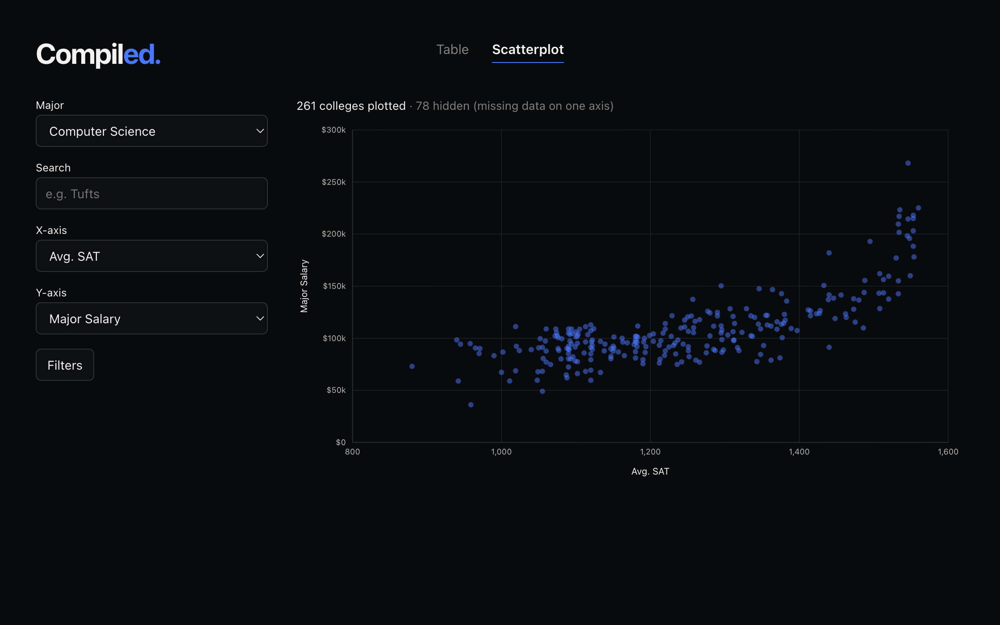

Jack Stuehler
B.S. in Computer Science and Mathematics, Minor in Spanish @ Tufts University
Incoming Business Analyst Intern @ Capital One, Summer 2027
Featured Project

Compiled
Data visualization for college comparison
Full-stack web app for comparing U.S. colleges by major-specific outcomes using Department of Education College Scorecard data. Explore and filter 1,900+ institutions across 235 majors through sortable rankings and an interactive scatterplot.
Next.js, TypeScript, MySQL
Experience
Capital One
Incoming Business Analyst Intern
Summer 2027
JumboCode
Software Developer
Create & Learn
Computer Science Instructor
SMASH Academy at Northeastern University
Computer Science Teaching Assistant
Research
Reinforcement Learning for Adaptase Tail Trimming
Applying reinforcement learning to identify and trim synthetic Adaptase tails from ssWGBS reads. Developed probabilistic tail models and a Python simulator, helped design the agent's action space and reward function, and curated sequencing datasets for training and evaluation.
Coursework
GPA: 4.0 / 4.0Computer Science
- Machine Structure & Assembly Language
- Data Structures
- Introduction to Computer Science
Mathematics
- Calculus III
- Linear Algebra
- Discrete Mathematics
Spanish
- Espíritu de Puerto Rico
- Composition and Conversation I
- Intermediate Spanish II
Other
- Africa to 1800
- Europe to 1815
- Introduction to the U.S. Healthcare System
Skills
Languages
C++, C, Python, Java, SQL, TypeScript, JavaScript, HTML, CSS
Frameworks & Tools
Next.js, React, MySQL, Git, GitHub, Linux, Valgrind
Spoken
English, Spanish (Professional Working Proficiency)